I spent the last 3 days playing with the latest frontier models to build my personal website.
This process took 180+ prompts across 5 chats and was happening as Fable 5.1 and GPT 6 Astra were released. I have no domain expertise in UX, product design and am not a developer.
My complete tool stack:
- Grok 4.7 for research, personal website references, and building initial brand direction files
- Fable 5 and 5.1 for reviewing design skills, finalizing design mockups, majority of code, UX, and mobile optimizations
- GPT 5.6 Luna for cheaper code execution after the structure was in place
- GPT 6 Astra for 3D rendering of the steel toggle switch, a gut check on design principles after I learned what grid sets were, further speed optimizations, copywriting assistance on this article, banner generation
- Aside browser as a harness for driving my screen, reviewing GitHub skills, and even an attempt to compose this article (see below)
- Wispr Flow to talk-to-prompt, making building a lot faster
- Talented designers that let me gut checking design principles with them, inspiration from X, and 10+ references of other personal websites
The full process from concept, to design, code and even writing this. Complete workflow and what I’d do differently.
1. Coming up with the design concept
I've been an AI power user and found creative output can be lackluster without strong skills and references. Without having a creative direction background, I first looked used Grok (on grok.com, not via Premium+ on X) to ask it to research personal websites. I like using Grok because it has real-time access to X, and I figured this was the right channel to query up past porfolios and websites that have gone viral.
Prompt
find me the best personal websites for inspirationIt gave me plenty to look at. I had it find and list out 30+ different personal websites. I used @asideAI , my main browser with built-in AI to open all those links, and analyze them for me based off my personal brand, which it derived from a write-like-emily.md skill, a distillation of everything I've posted on X.
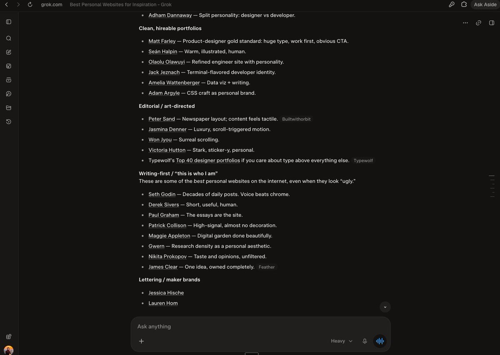
What it gave me was far from what I wanted... so I went through the sites myself. I used @WisprFlow to talk through what I liked and disliked as I browsed. Claude Fable 5 in Aside helped turn those reactions into a brief. It was important to create a instructions on what I liked and disliked. Out of the entire list, @patrickc 's site was my favorite. I liked how minimal it was. @dustinbrett 's browser desktop made me interest in a browser type interface, I just wanted it more minimal. The saved record had 35 sites reviewed and six kept as the final references. Each had a note on what I liked and what I didn’t want to carry over. This is a principle I've learned on how to get the best output with AI: reinforce what you like and didn't like; it improves on the next turn.
Finalizing a design concept
Out of my distrust in relying on AI completely for output, I opened up GitHub on my Aside browser and had Claude Fable 5.1 evaluate and compare different design and brand skills. We looked at Impeccable, taste-skill, and other UI skills to build out the brief. Impeccable by @pbakaus is one of the best, highly recommend. The useful part was reading what the skills actually told the agent to do. Some were about visual execution. Others were questionnaires or meant for a different kind of tool. I really like using this grill-me skill by @mattpocockuk to help refine briefs and skill files. Claude interviewed me and helped create a BRAND.md. One of my answers became the premise for the site: It distilled it down to wanting a place for my work, experiments, things I’m learning, talks, and side projects in one place. I've spent years posting on X but haven't had the time until now to build out some repository. The handoff to Claude Code included:
- BRAND.md: the brief, voice, references, and things to avoid
- CONTENT-LINKS.md: the material that could go on the site
- CLAUDE.md: how to work in the project
- Screenshots of the references I’d chosen
In Claude Code, I used Impeccable to explore and refine the design. This took multiple iterations. I hated the first few design mockups. I had to go back on forth to land on two design directions that resonated more.
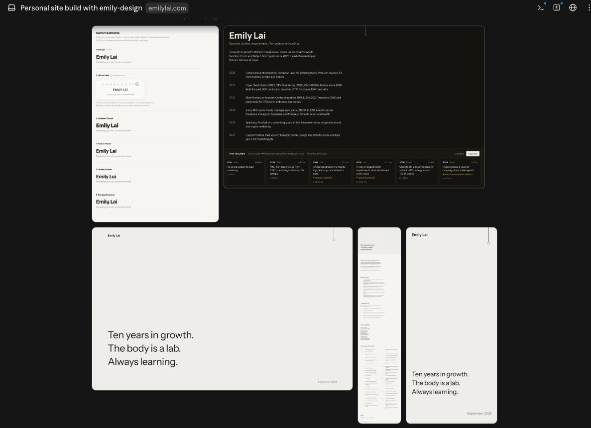
Some access to identity.md folders leaked over and when Claude Code generated font types for me, it included a Margiela tag. Definitely didn't want that on my website lol
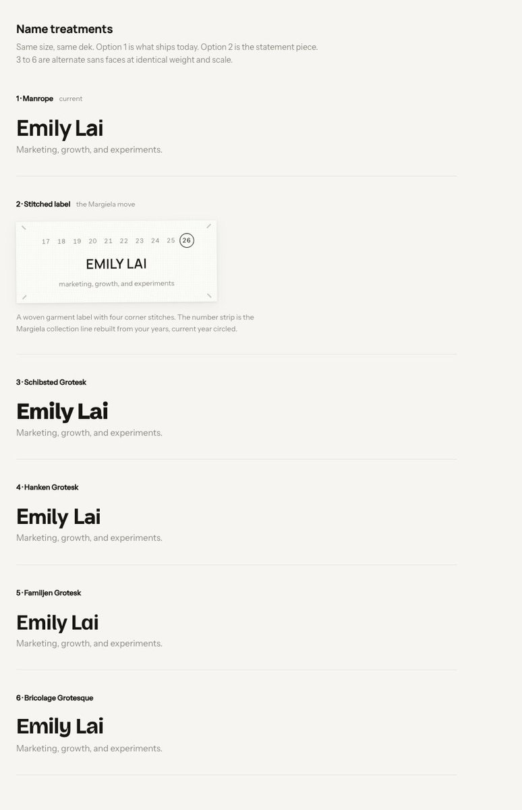
Two of the more refined visual directions it made for me were "The Depth Dial" and "The Desk" :
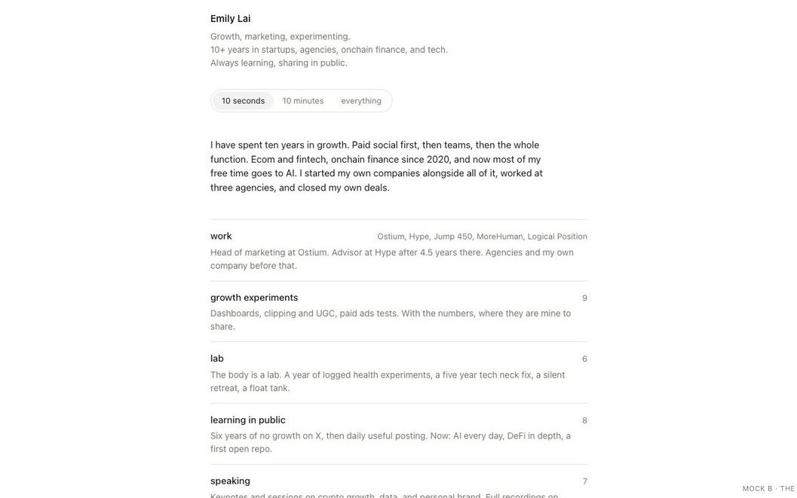
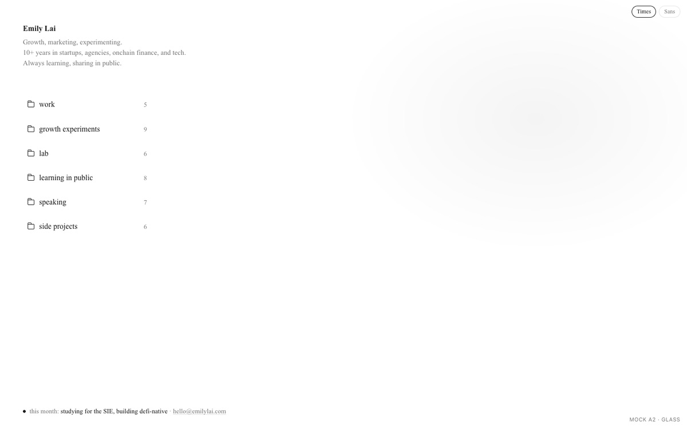
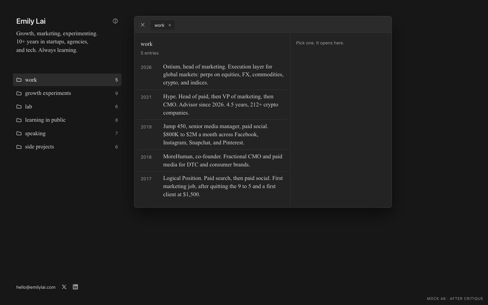
The Depth Dial had one column and a control for “10 seconds,” “10 minutes,” or “everything,” revealing more detail as you changed it. The Desk had folders on the left and space for a window to open. I loved how the folders opened up into a notepad UI and went with The Desk. Then came the smaller choices: glass treatment, notes-style tabs, the list and reader, dark mode, spacing, margin, padding, and ensuring it was all mobile optimized. I had Claude make another mock for me with a Times Roman/Sans Serif switch so I could compare the type font directly. I eventually chose Times for the majority and system sans for the interface.
2. Building out the website content
This part took the absolute longest. Manually finding, filtering, and mapping my internet artifacts took a majority of the prompts. Old tweets. Videos. Talks. Projects. Things I’d forgotten I had already written about. I used my X archive and had Claude and later Astra help find and organize links into different buckets. I thought Grok would be great at this because it has access to my X, but the reasoning doesn't seem as in depth as the other two. Claude helped with the initial filtering, but I still had to decide what belonged, what needed context, what was repetitive, and ensure nothing was missing. Then many, many rounds of copy and prompting. Both for how it was structuring the content, as well as the content itself.
I have given AI many chances on writing copy for me, and Astra took this article to maybe about 30%, but I haven't yet found a work flow where I can fully trust AI on writing the way I'd want it. "Move this post. Put the post before the video. Cut this sentence. Keep that title. This sounds too self-important. This doesn’t sound like me." Fable a Google sheet for me which became the content source. Entries could be moved, renamed, and rebuilt without editing every page by hand. I also discovered the site could show the full X post and embed LinkedIn posts; that unlocked even more content possibilities.
At this point, I had Fable walk me through how to get this live with GitHub Pages and point my domain at it.
With every iteration, I would check how it looked on my mobile phone, open every folder, note, and click around. I used Wispr Flow to "live prompt" and make comments. Fable did an excellent job organizing all my thoughts and pushing the code. A few of these promps were me just yapping for 20 minutes straight lol:
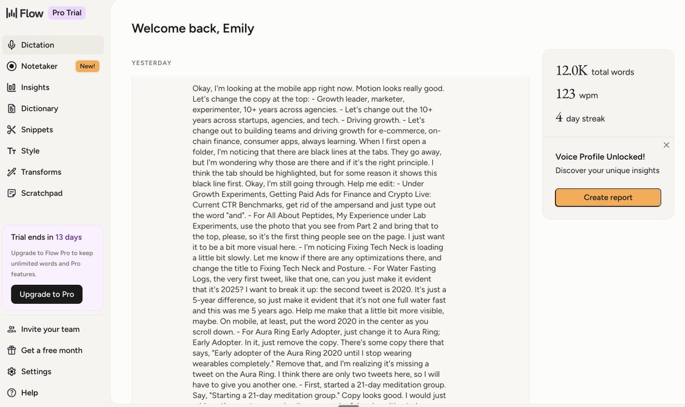
I also had Grok in final stages of content with the CSV check my X posts again for anything we’d missed. I actually found this less helpful at scale. With Grok, you have to write pointed requests like "Hey did @emilylai every talk about water fasting? Please find all the posts about it" The search helped me collect the material. Deciding what it said about me took longer. This whole process took me a full day with some breaks.
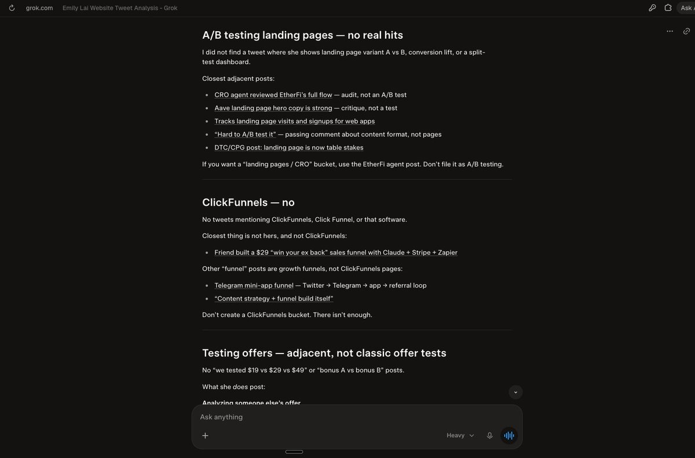
3. Adding features and functionality
Fable 5.1 was an excellent design partner and would help me think through easter eggs (yes there is at least one!), design choices, and features.
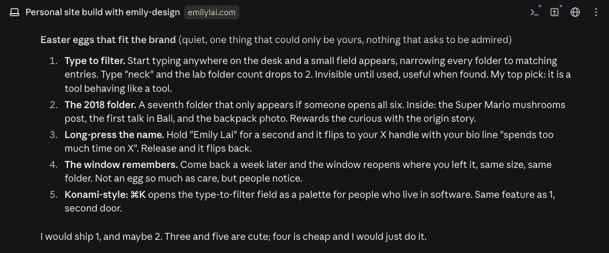
If you're on desktop, you'll notice the notes module can be moved around the screen and fully adjusted. There's also a search built in that automatically loads when you start typing.
On mobile, it's optimized to where notes can be swiped through and closed with finger movements, rather than just tapping on the 'x' to close out. I also worked with Fable to animate and work on the movements of how folders opened.
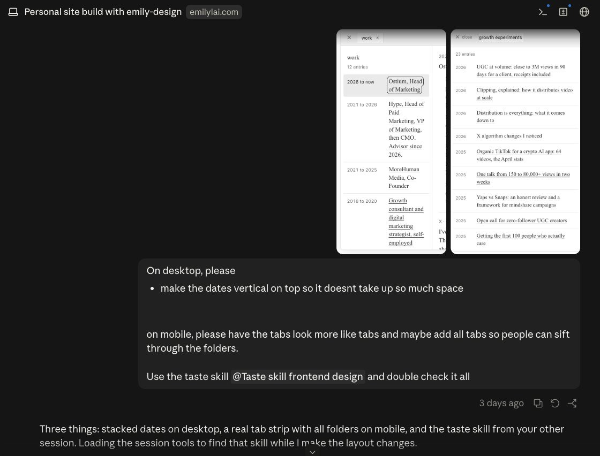
You can tell my trust levels are low for fully relying on AI when it comes to domain expertise, even the frontier models. This is why I built @defi_native_ai when I realized AI was not always giving me accurate information when I was trying to learn about onchain finance. I had Fable use skills multiple times throughout the process and would have it reference UI guides made by well known designers.
4. Astra Launches In My Final Touches
@OpenAI's Astra model launched on September 3rd. It wasn't available in ChatGPT Plus account at the time, but I discovered I had access in my terminal through Codex CLI on September 4th. I ended up pulling an all nighter that evening:
I used Astra to do a full audit and rerun the Impeccable skill. It corrected spacing, dividers, small-laptop overflow and mobile sizing. It added some more mobile interactions and also helped improve speed by reducing served image weight by 51% and adding progressive rendering. The fact Astra caught some things that Fable didn't, and Fable caught things Grok didn't makes me believe having model and agentic orchestration to review is important for quality. I still wasn't 100% sure on UX and design principles and have been feeling a bit shy about sharing the site with the world. I ended up asking some designers for feedback. One is a top designer for tech companies. He introduced me to Marvin's post and grid sets.
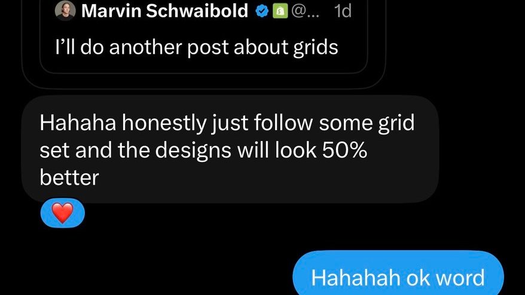
That sent me into a whole other round of questions. I had never heard of grid sets before. Because this was a post from @Mschwaibold, I used Grok 4.6 again to get more details on grid sets.
Prompts
Prompt 1
Help me find grid sets for design that I can feed an llm to help me for my website
Prompt 2
Can you analyze emilylai.com and tell me if this is the proper grid set a talented designer would use
Prompt 3
Give me the exact instructions to share with my design llm to make sure this is the right grid set and design for
mobile
desktop
when the folders are open and closed
Prompt 4
Great. Please double check and 100%. Confirm for me, every element and detail and window
Prompt 5
Will this apply to every browser and screensize?
the menu bar and tabsIt recommended shared spacing and sizing rules, along with a long list of pixel changes. The output seemed high quality, it was given me specific aspect ratios, pieces of code, and rules.
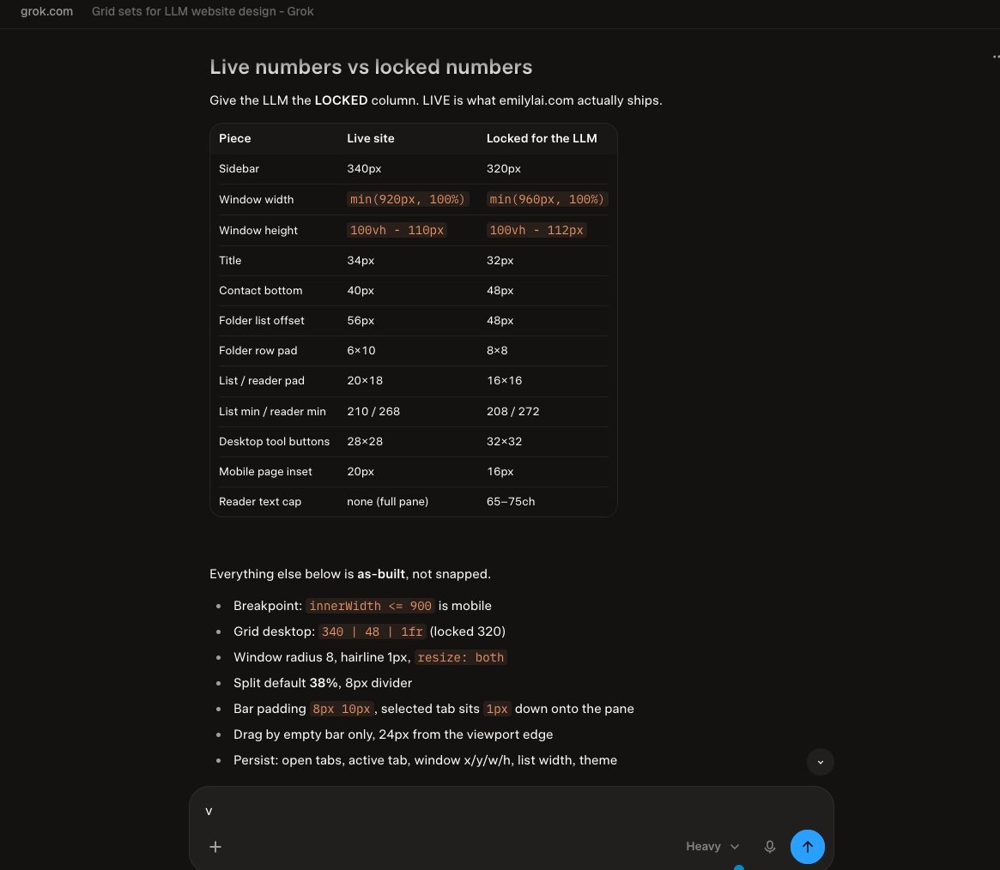
I brought that advice and the recommendation files from Grok to Astra. It disagreed with parts of them. That was a useful reminder to ask for the reasoning and to use the most powerful models possible when it comes to specific domains and strategic planning. Astra ran an audit and found concrete problems. At one breakpoint, making the browser a pixel wider made the window 115px narrower. The divider calculation wasn’t reserving enough space for the reader. I used Grok to point at Marvin's profile and distill his core principles on grid sets based off his posts (vs. just a general, broad take) and gave that all to Astra to fix.
5. Inspired Last Detail: The Steel Toggle
I saw this post by @marques_ph this morning on his light sweet and was reminded of a brushed steel ones I once saw.
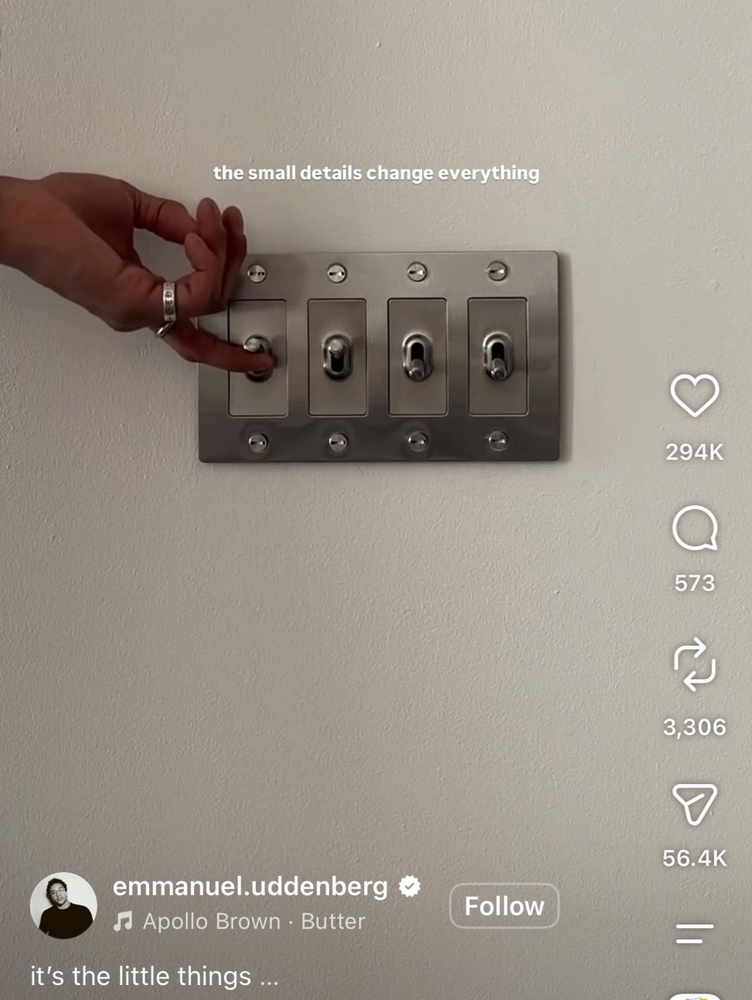
I've been seeing posts on Aster generating 3D renders and worlds and thought to replace my current dark/light mode switch to something hyperrealistic.
The previous toggle used simple icons of a sun and moon.
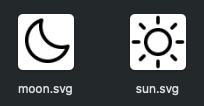
I brought Aster photos of Buster + Punch steel switches as material references from a variety of angles. It generated this with the first prompt:
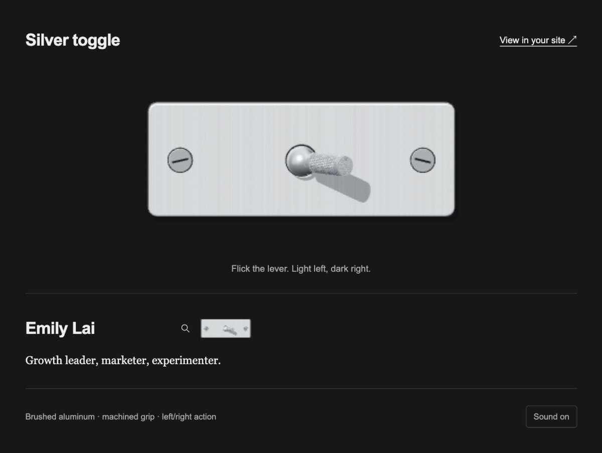
It took a few iterations to get to the hyperrealism and shine I wanted. The feedback got more specific:
- Shinier steel
- Brushed grain
- A darker recess around the lever
- More detail on the grip and end cap
- Horizontal screwdriver slots in the bolts
A lot of the above was picked up from image references. I ate through my 5h limit. I used one reset and it still wasn't enough. I bit the bullet and upgraded to Pro 5x.
Full prompt
For the light / dark mode icon for emilylai.com, can you help me replace it with a aluminum steel silver toggle?
I'm attaching refrences of something simialr. Rather than square, please make it slimmer rectangle and it toggles left/right verses up/down.
I want it to be hyperrealistic and make a toggle sound "click" when switched.
https://www.youtube.com/shorts/WIXsEjS6Idk for the sound of the click.
Attaching references.
Make a hyperrealistic 3d version i can code into the site.Really impressive. I've never opened Blender or used any 3D modeling software. Codex built it with Three.js geometry. The grip has 432 raised facets. The plate has depth, the lever casts a shadow, and the reflections come from a generated studio lighting setup. Then we worked on the sound.
It started with crisp, heavy, and damped clicks. It didn't hit right and I asked for more. The set grew to include chunky, metallic, relay, and latch sounds. Crisp snap was the closest and I asked for it to be slightly heavier. That's the weighted snap version you hear on the site today. The clicks are synthesized in the browser and wasn't extracted the audio from reference videos. Aster made me a mock within the Codex browser that let me switch between the sounds and feel each one with movement.
Then it helped me render a static image to load more quickly and merged on GitHub.
Reflections, learnings, what i would do next time:
Reflection #1: The most powerful models are still not there for copywriting.
After this entire process, I had every model write up a reflection on:
- What did we work on together
- What was recieved and handed off
- What were the main questions I asked
- What was fixed and resolved together
Fable 5.1 had a majority of the early mock up assets. I fed all of this into Astra, loaded it with my write-like-emily.md skill, prompted it with Wispr Flow with my high level context and asked it draft this article for me.
Astra probably helped me get 30% there. I've had to rewrite sentences and remove some that just don't sound like me.
This makes me think I either haven't reinforced AI enough on how I'd like it to write, and/or it's just not there yet. The most helpful piece was the structure recommendations.
Reflection #2: Seeing AI control your computer is magical, and I've tested it quite a bit on Grok @bot and Aside, but it still feels like self-driving in early Tesla days where you need your hand on the wheel.
I also tried Grok 4.6 in the Aside browser to paste the draft and assets in the X composer for me. This is a 5 minute video sped up to 10 seconds. It made strange messages to test it could type.
Reflection #3: The more references you have on what you want, and what you don't want, the better. If you don't know what you want, work with AI as a brainstorming partner, but you yourself need to be the creative catalyst. Reflection #4: Get experts in to check your work, and feed that back into AI.
Reflection #5: It's important to play with the latest models and consistently test. They're innovating so quickly now, and each new release feels like a huge jump forward. These last ~1.5 weeks of truly power using Hermes, Fable, Grok Bot, and now Astra have been some of the most productive for me.
Reflection #6: Use Fable 5.1 and Astra, the latest models for auditing and planning. Use a cheaper model for coding.
Reflection #7: Astra seems to be better at Fable 5.1 for 3D rendering and creative. I've also been using GPT 5.6 Sol quite a lot with simple statics, including the banner on this article.
You can see the full website here: https://emilylai.com
If you're a designer and have more feedback, please share. I still have some doubts on relying on AI for certain domains I have little working experience in. And if there are any recommendations for how I could reduce token costs or have better improved this workflow, please let me know. Thanks for reading. :)
Originally published on X.
← Go back to emilylai.com